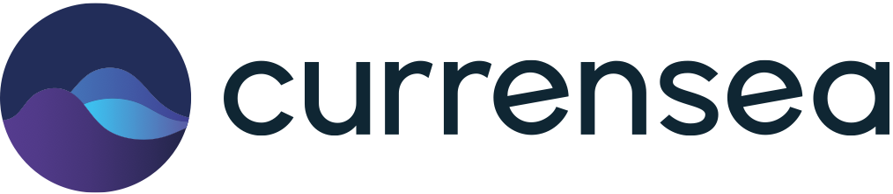

01
Currensea
Joined Currensea on a contract to modernise its test automation stack. Upgraded Node.js from v14 to v18 and WebdriverIO from v7 to v9 across the test frameworks and shared testing library. Refactored the existing suites to use current WebdriverIO APIs, diagnosed and resolved systemic test failures, and improved the test results from 7 passing and 22 failing to all 29 tests passing. Also updated project documentation and onboarding procedures to support ongoing maintenance.